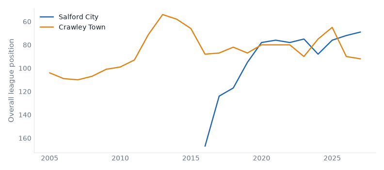
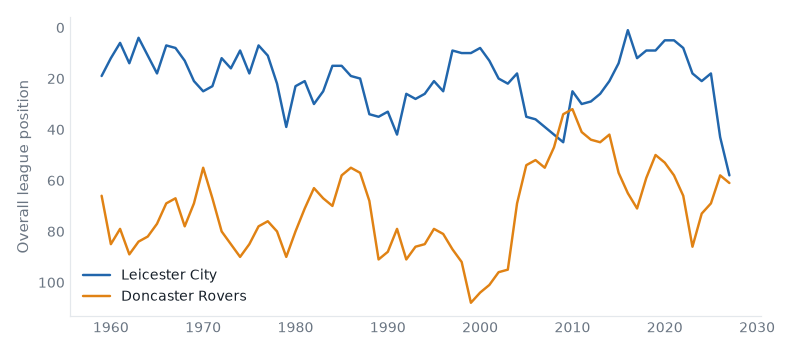

League One, League Two and the National League, 13 October to 19 October 2026. 24 results.Friday's preview.
Leicester 2–1 Doncaster. Friday's case: fallen giant, 2 below level, above level, neighbours, yo-yo club, relegated last season. Leicester up from 17th to 14th; Doncaster down from 16th to 17th.
Stockport 1–0 Bromley. Friday's case: 2 above level, yo-yo club, champions last season. Stockport up from 3rd to 2nd; Bromley down from 21st to 22nd.
Sheffield Weds 5–0 AFC Wimbledon. Friday's case: fallen giant, below level, above level, yo-yo club, relegated last season. Sheffield Weds up from 7th to 6th; AFC Wimbledon down from 11th to 15th.
Barnsley 1–2 Cambridge. Friday's case: fallen giant, below level, above level, yo-yo club, promoted last season. Barnsley down from 19th to 21st; Cambridge stay 5th.
Plymouth 0–2 Huddersfield. Friday's case: fallen giant, below level, neighbours, yo-yo club. Plymouth down from 1st to 4th; Huddersfield up from 4th to 3rd.
Salford 2–1 Crawley Town compare
League Two, Sat 17 Oct
Crawley Town have 5 points from 9 games, their worst start in their record.

Leicester 2–1 Doncaster compare
League One, Sat 17 Oct
Leicester City beat Doncaster Rovers for the first time since 2013/14.

Sheffield Weds 5–0 AFC Wimbledon compare
League One, Sat 17 Oct
Sheffield Wednesday have 18 points from 9 games, their best start since 1990/91.
Stockport 1–0 Bromley compare
League One, Sat 17 Oct
Bromley have 8 points from 9 games, their worst start since 2016/17.
Wycombe 2–0 Notts County compare
League One, Sat 17 Oct
Wycombe Wanderers beat Notts County for the first time since 2016/17.
Tranmere 1–2 Barnet compare
League Two, Sat 17 Oct
Barnet have 21 points from 9 games, their best start since 2014/15.
| Thu 15 | Mansfield | 1–1 | Oxford | ↑1 | compare | |
| Sat 17 | Barnsley | 1–2 | Cambridge | ↓2 | compare | worst start since 2021/22 |
| Sat 17 | Bradford | 2–0 | Stevenage | ↑1 ↓3 | compare | worst start since 2021/22 |
| Sat 17 | Leicester | 2–1 | Doncaster | ↑3 ↓1 | compare | first win v Doncaster Rovers since 2013/14 |
| Sat 17 | Leyton Orient | 2–0 | Blackpool | ↑3 ↓2 | compare | |
| Sat 17 | Milton Keynes Dons | 2–1 | Luton | ↑5 ↓3 | compare | worst start since 2020/21 |
| Sat 17 | Peterboro | 2–2 | Burton | ↑1 | compare | best start since 2021/22 |
| Sat 17 | Plymouth | 0–2 | Huddersfield | ↓3 ↑1 | compare | |
| Sat 17 | Sheffield Weds | 5–0 | AFC Wimbledon | ↑1 ↓4 | compare | best start since 1990/91 |
| Sat 17 | Stockport | 1–0 | Bromley | ↑1 ↓1 | compare | worst start since 2016/17 |
| Sat 17 | Wigan | 1–0 | Reading | ↓1 | compare | worst start since 2020/21 |
| Sat 17 | Wycombe | 2–0 | Notts County | ↑4 ↓1 | compare | first win v Notts County since 2016/17 |
| P | W | D | L | GD | Pts | ||
|---|---|---|---|---|---|---|---|
| 1 | Huddersfield Town | 6 | 3 | 2 | 1 | +4 | 11 |
| 2 | Oxford United | 5 | 3 | 1 | 1 | +4 | 10 |
| 3 | Plymouth Argyle | 5 | 3 | 1 | 1 | +3 | 10 |
| 4 | Sheffield Wednesday | 4 | 3 | 1 | 0 | +3 | 10 |
| 5 | Bradford City | 5 | 3 | 1 | 1 | +1 | 10 |
| 6 | Cambridge United | 5 | 2 | 3 | 0 | +2 | 9 |
| 7 | Leyton Orient | 4 | 2 | 2 | 0 | +7 | 8 |
| 8 | Stockport County | 4 | 2 | 1 | 1 | +4 | 7 |
| 9 | Wycombe Wanderers | 4 | 2 | 1 | 1 | -2 | 7 |
| 10 | Burton Albion | 6 | 2 | 1 | 3 | -3 | 7 |
| 11 | Leicester City | 4 | 1 | 3 | 0 | +1 | 6 |
| 12 | Luton Town | 5 | 2 | 0 | 3 | -1 | 6 |
| 13 | Reading | 5 | 1 | 2 | 2 | +2 | 5 |
| 14 | Stevenage | 5 | 1 | 2 | 2 | +1 | 5 |
| 15 | Doncaster Rovers | 5 | 1 | 1 | 3 | -1 | 4 |
| 16 | Barnsley | 4 | 1 | 1 | 2 | -3 | 4 |
| 17 | Peterborough United | 5 | 1 | 1 | 3 | -5 | 4 |
| 18 | Bromley | 5 | 1 | 1 | 3 | -6 | 4 |
| 19 | AFC Wimbledon | 6 | 1 | 1 | 4 | -10 | 4 |
| 20 | MK Dons | 4 | 0 | 3 | 1 | -2 | 3 |
| 21 | Notts County | 5 | 0 | 3 | 2 | -4 | 3 |
| 22 | Blackpool | 5 | 1 | 0 | 4 | -5 | 3 |
| 23 | Wigan Athletic | 4 | 0 | 1 | 3 | -3 | 1 |
| 24 | Mansfield Town | 4 | 0 | 1 | 3 | -7 | 1 |
| Sat 17 | Accrington | 3–1 | Gillingham | ↑5 ↓2 | compare | |
| Sat 17 | Colchester | 0–0 | Exeter | ↓1 ↓2 | compare | |
| Sat 17 | Crewe | 3–2 | Rochdale | ↓3 | compare | best start since 2019/20 |
| Sat 17 | Fleetwood Town | 2–0 | Rotherham | ↑4 ↓3 | compare | first win v Rotherham United since 2021/22 |
| Sat 17 | Grimsby | 0–2 | Northampton | ↓4 ↑1 | compare | first win v Grimsby Town since 2019/20 |
| Sat 17 | Newport County | 1–1 | York | ↑1 ↑1 | compare | |
| Sat 17 | Oldham | 4–1 | Cheltenham | ↑2 | compare | best start since 2020/21 |
| Sat 17 | Port Vale | 1–0 | Chesterfield | ↑1 | compare | |
| Sat 17 | Salford | 2–1 | Crawley Town | compare | worst start on record | |
| Sat 17 | Shrewsbury | 1–0 | Bristol Rvs | ↑4 | compare | |
| Sat 17 | Swindon | 1–1 | Walsall | ↓1 ↑1 | compare | |
| Sat 17 | Tranmere | 1–2 | Barnet | ↓4 | compare | best start since 2014/15 |
| P | W | D | L | GD | Pts | ||
|---|---|---|---|---|---|---|---|
| 1 | Barnet | 5 | 3 | 2 | 0 | +5 | 11 |
| 2 | Crewe Alexandra | 5 | 2 | 3 | 0 | +2 | 9 |
| 3 | Walsall | 6 | 1 | 5 | 0 | +3 | 8 |
| 4 | Gillingham | 6 | 2 | 2 | 2 | +1 | 8 |
| 5 | Salford City | 5 | 2 | 1 | 2 | +2 | 7 |
| 6 | Chesterfield | 6 | 2 | 1 | 3 | -1 | 7 |
| 7 | Northampton Town | 5 | 1 | 2 | 2 | -1 | 5 |
| 8 | Fleetwood Town | 5 | 1 | 2 | 2 | -2 | 5 |
| 9 | Cheltenham Town | 6 | 1 | 2 | 3 | -4 | 5 |
| 10 | Rochdale | 6 | 1 | 2 | 3 | -4 | 5 |
| 11 | Crawley Town | 5 | 1 | 1 | 3 | -3 | 4 |
| 12 | Exeter City | 6 | 1 | 1 | 4 | -3 | 4 |
| 13 | Rotherham United | 6 | 1 | 1 | 4 | -4 | 4 |
| 14 | Shrewsbury Town | 5 | 1 | 1 | 3 | -6 | 4 |
| 15 | Grimsby Town | 5 | 0 | 3 | 2 | -2 | 3 |
| 16 | York City | 5 | 0 | 3 | 2 | -3 | 3 |
| 17 | Tranmere Rovers | 5 | 0 | 3 | 2 | -4 | 3 |
| 18 | Bristol Rovers | 6 | 1 | 0 | 5 | -7 | 3 |
| 19 | Accrington Stanley | 5 | 0 | 2 | 3 | -4 | 2 |
| 20 | Newport County | 5 | 0 | 2 | 3 | -4 | 2 |
| 21 | Colchester United | 5 | 0 | 2 | 3 | -5 | 2 |
| 22 | Oldham Athletic | 4 | 0 | 1 | 3 | -5 | 1 |
| 23 | Swindon Town | 5 | 0 | 1 | 4 | -9 | 1 |
| 24 | Port Vale | 4 | 0 | 0 | 4 | -7 | 0 |
No results on file.
| P | W | D | L | GD | Pts | ||
|---|---|---|---|---|---|---|---|
| 1 | Boreham Wood | 7 | 6 | 1 | 0 | +12 | 19 |
| 2 | Southend United | 7 | 4 | 3 | 0 | +10 | 15 |
| 3 | AFC Fylde | 7 | 5 | 0 | 2 | +5 | 15 |
| 4 | Harrogate Town | 6 | 4 | 0 | 2 | +1 | 12 |
| 5 | Yeovil Town | 6 | 3 | 2 | 1 | +7 | 11 |
| 6 | Worthing | 6 | 3 | 2 | 1 | +3 | 11 |
| 7 | Barrow | 7 | 2 | 3 | 2 | 0 | 9 |
| 8 | Altrincham | 7 | 3 | 0 | 4 | -5 | 9 |
| 9 | Carlisle United | 6 | 2 | 2 | 2 | +2 | 8 |
| 10 | Wealdstone | 7 | 2 | 2 | 3 | +1 | 8 |
| 11 | Forest Green Rovers | 5 | 2 | 2 | 1 | 0 | 8 |
| 12 | Kidderminster Harriers | 6 | 2 | 2 | 2 | 0 | 8 |
| 13 | Sutton United | 6 | 2 | 2 | 2 | -1 | 8 |
| 14 | Aldershot Town | 7 | 2 | 2 | 3 | -2 | 8 |
| 15 | Boston United | 6 | 2 | 2 | 2 | -3 | 8 |
| 16 | Woking | 6 | 2 | 1 | 3 | +1 | 7 |
| 17 | FC Halifax Town | 6 | 2 | 0 | 4 | -1 | 6 |
| 18 | Hartlepool United | 7 | 2 | 0 | 5 | -5 | 6 |
| 19 | Hornchurch | 7 | 2 | 0 | 5 | -11 | 6 |
| 20 | Solihull Moors | 6 | 1 | 1 | 4 | -11 | 4 |
| 21 | Tamworth | 7 | 1 | 1 | 5 | -11 | 4 |
| 22 | Eastleigh | 6 | 1 | 0 | 5 | -7 | 3 |
| 23 | Scunthorpe United | 7 | 1 | 0 | 6 | -8 | 3 |
| 24 | Gateshead | 7 | 0 | 0 | 7 | -17 | 0 |
Salford City: 5 wins in a row; the record is 7 (2017/18).
Built from the English football database, tiers 1–5 from 1958/59. Results from football-data.co.uk. Archived copy.